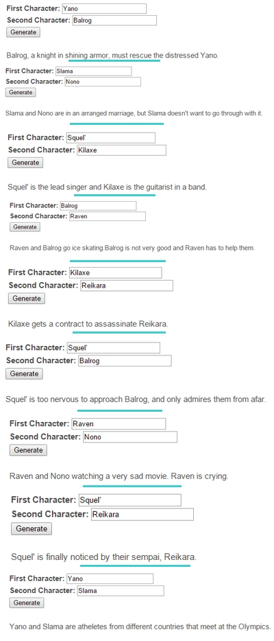

Un nom
Sur Skype, il n'y avait pas de règle. Chacun pouvait changer à sa guise le nom de la conversation.
Puis un beau jour de septembre, Rmc eut un soudain crush sur un jeune homme (elle a vite compris
qu'il n'était pas du même bord qu'elle, mais il est devenu un très bon ami à elle par la suite.
Jusqu'à ce qu'il l'ignore violemment il y a quelques semaines, mais ça c'est une autre histoire), et
décida sur un coup de tête de renommer le groupe "Bol-kun", en référence au surnom qu'elle lui
donnait intérieurement, à cause de sa coupe de cheveux. Même si le nom a ensuite encore parfois
changé, "Le Bol" était né.
Les anniversaires
Blrg, c'est un pianiste, un très gentil pianiste même. Le premier morceau qu'il a enregistré pour
l'anniversaire de Rmc, elle l'a précieusement gardé sur son ordinateur, sur son bureau pour toujours
le voir. Il a malheureusement fini par disparaître, comme toutes les données corrompues de son pc
lorsqu'il a rendu l'âme. Elle en est encore dépitée aujourd'hui. :')
Rmc elle, de son côté, a commencé à lui "créer" des cadeaux d'un goût plutôt douteux, un peu
farfelus. Le premier était un jeu qui se nommait "Desallymes Quest" (la plupart des données ayant
disparu, nous nous contenterons de quelques images en guise d'illustration. J'espère que voir cette
photo te fera sourire et pas l'inverse, sinon je suis vraiment désolée ;;)
Les deux comparses ont ainsi créé une petite tradition des cadeaux d'anniversaire. Ils ne le
faisaient pas tous les ans, mais c'étaient toujours de bons moments.
Mentions honorables
Parce-que le Bol, ce n'est pas que Blrg et Rmc, les autres membres aussi faisaient leurs petites affaires. Cette année-là, Squel' a ouvert son forum de RP Lonicia. Existe-t'il encore aujourd'hui ?
Parfois aussi, de simples sites internet les amusaient. Ne me demande pas le contexte, je n'en ai aucune idée.
